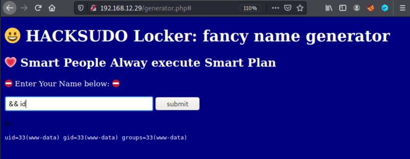

3.2 Command injection
1. If you introduce some command you'll see results as the following.
uid=33(www-data) gid=33(www-data) groups=33(www-data)

You got the user “www-data” as the result. So, you can inject some commands.
2. Look at the “/var/www” directory.
There's a file called “hacksudo”.